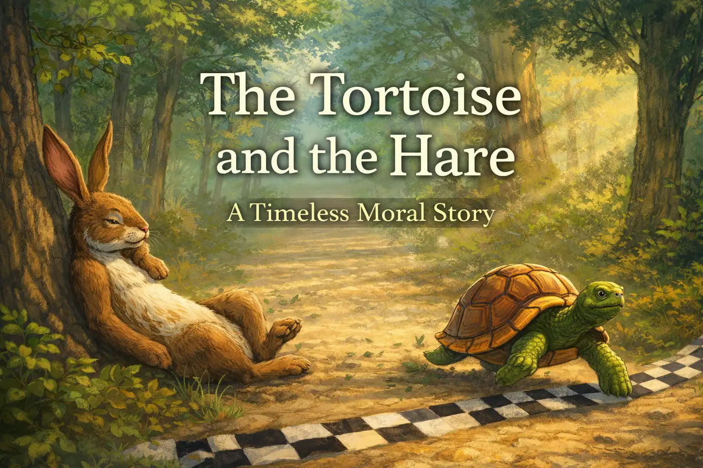

In "The Tortoise and the Hare," a boastful rabbit challenges a slow-moving turtle to a race. Confident in his natural speed, the hare sprints ahead and takes a casual nap. Meanwhile, the tortoise plods along steadily, ultimately winning the race while the overconfident hare oversleeps.
The ChallengeThe story opens with a boastful hare who continually mocks the tortoise for his sluggish pace. Fed up with the teasing, the tortoise challenges the hare to a race to prove a point. Amused by the absurdity of the challenge and absolutely certain of an easy victory, the hare agrees.
The Lead and the NapWhen the race begins, the hare dashes forward and quickly builds a massive lead. Certain that the tortoise is far behind and cannot possibly catch up, the arrogant hare decides he has time to rest and falls asleep by the side of the course
The Unlikely VictoryWhile the hare sleeps soundly, the tortoise plods slowly but steadily forward, never stopping. By the time the hare finally wakes up, the tortoise is already nearing the finish line. The hare rushes to catch up, but it is too late, and the tortoise crosses the finish line first.

The moral of the story is slow and steady wins the race.
to-computer teacher